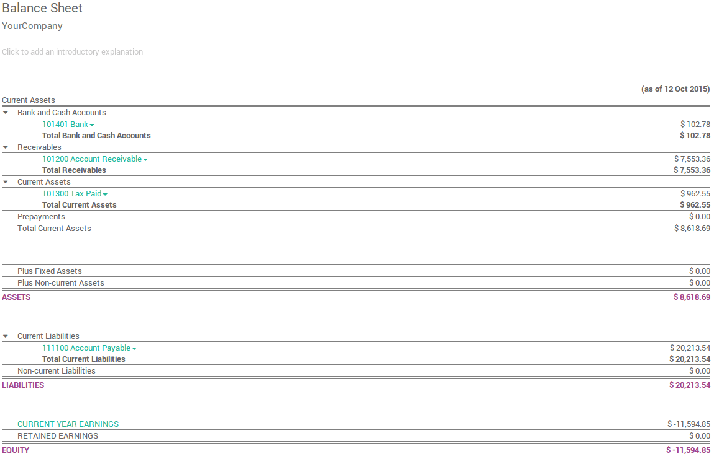
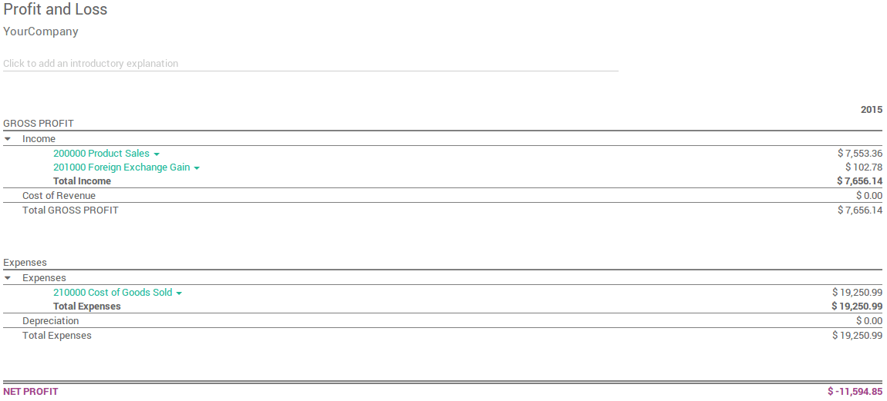
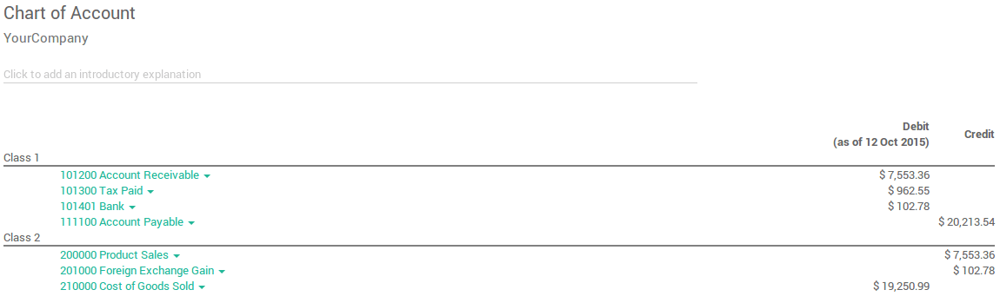
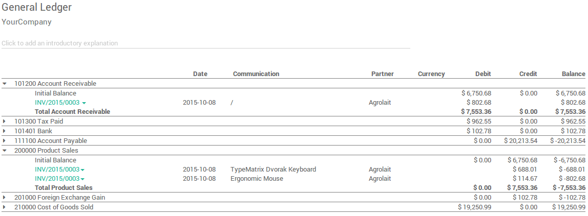

Besides the reports created specifically in each localisation module, a few very useful generic and dynamic reports are available for all countries :
- Balance Sheet
- Profit and Loss
- Chart of Account
- Executive Summary
- General Ledger
- Aged Payable
- Aged Receivable
- Cash Flow Statement
- Tax Report
- Bank Reconciliation
You can annotate every reports to print them and report to your adviser. Export to xls to manage extra analysis. Drill down in the reports to see more details (payments, invoices, journal items, etc.).
You can also compare values with another period. Choose how many periods you want to compare the chosen time period with. You can choose up to 12 periods back from the date of the report if you don't want to use the default Previous 1 Period option.
Balance Sheet
The Balance Sheet shows a snapshot of the assets, liabilities and equity of your organisation as at a particular date.
Profit and Loss
The Profit and Loss report (or Income Statement) shows your organisation's net income, by deducting expenses from revenue for the report period.
Chart of account
A listing of all your accounts grouped by class.
Executive Summary
The Executive Summary allows for a quick look at all the important figures you need to run your company.
In very basic terms, this is what each of the items in this section is reporting :
- Performance:
- Gross profit margin:
- The contribution each individual sale made by your business less any direct costs needed to make those sales (things like labour, materials, etc).
- Net profit margin:
- The contribution each individual sale made by your business less any direct costs needed to make those sales, as well as any fixed overheads your company has (things like rent, electricity, taxes you need to pay as a result of those sales).
- Return on investment (p.a.):
- The ratio of net profit made, to the amount of assets the company used to make those profits.
- Position:
- Average debtor days:
- The average number of days it takes your customers to pay you (fully), across all your customer invoices.
- Average creditor days:
- The average number of days it takes you to pay your suppliers (fully) across all your bills.
- Short term cash forecast:
- How much cash is expected in or out of your organisation in the next month i.e. balance of your Sales account for the month less the balance of your Purchases account for the month.
- Current assets to liabilities:
- Also referred to as current ratio, this is the ratio of current assets (assets that could be turned into cash within a year) to the current liabilities (liabilities which will be due in the next year). This is typically used as as a measure of a company's ability to service its debt.

General Ledger
The General Ledger Report shows all transactions from all accounts for a chosen date range. The initial summary report shows the totals for each account and from there you can view a detailed transaction report or any exceptions. This report is useful for checking every transaction that occurred during a certain period of time.
Aged Payable
Run the Aged Payable Details report to display information on individual bills, credit notes and overpayments owed by you, and how long these have gone unpaid.

Aged Receivable
The Aged Receivables report shows the sales invoices that were awaiting payment during a selected month and several months prior.

Cash Flow Statement
The Cash Flow Statement shows how changes in balance sheet accounts and income affect cash and cash equivalents, and breaks the analysis down to operating, investing and financing activities.

Tax Report
This report allows you to see the net and tax amounts for all the taxes grouped by type (sale/purchase).